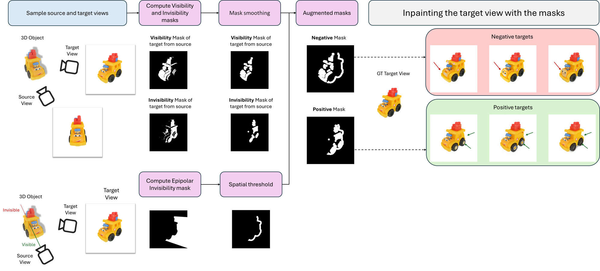

Appreciate the View: A Task-Aware Evaluation Framework for Novel View Synthesis (3DV 2026)
A diffusion-feature-based metric for Novel View Synthesis that assesses realism and geometric consistency by jointly comparing the generated view, the source image, and the intended camera motion.

Abstract
We introduce PRISM, a task-aware evaluation framework for Novel View Synthesis (NVS) that measures whether a generated view is both realistic and faithful to the source image and intended viewpoint transformation. Although diffusion-based NVS models have improved in visual quality, existing metrics often mis-rank incorrect results because they ignore the geometric relationship between source and target views. Our approach leverages viewpoint-aware diffusion features from Zero123 and refines them with a lightweight tuning step, enabling more discriminative and consistent evaluation. We introduce two complementary metrics—one reference-based and one reference-free—that reliably detect incorrect generations and produce stable model rankings aligned with human judgments. Across Toys4K, Google Scanned Objects, and OmniObject3D, our reference-free metric yields clear and meaningful comparisons, with lower scores consistently reflecting stronger NVS models. PRISM provides a principled and practical foundation for evaluating NVS quality and supports more trustworthy progress in novel view synthesis.
Method Overview

Appreciate the View introduces PRISM, a feature-based evaluation method tailored to novel view synthesis. Our approach embeds the source image, the generated target view, and the intended viewpoint transformation using pose-aware diffusion features from a strong NVS backbone. A lightweight tuning step sharpens these features so they reflect whether the output is consistent with the source–target geometry. From this representation, we derive both a reference-based score and a reference-free score that quantify synthesis quality in a stable, viewpoint-aware manner. This allows PRISM to distinguish plausible views from incorrect ones and to produce model rankings that closely align with human judgments.
Dataset Creation

Overview of our VIEWMATCH dataset creation process. From a 3D mesh and a pair of source–target viewpoints, we first compute visibility and invisibility masks of the target view by identifying which target-view faces are visible from the source. We also derive an epipolar invisibility mask that marks regions beyond the object that cannot be seen from the source viewpoint. These masks are then combined and augmented to allow for controlled shape changes, and the resulting masks—together with the ground-truth target view—are used as inputs to an inpainting model to generate positive and negative examples for training.
Correlation with Human Judgments
We evaluate how well various metrics align with human preferences across four aspects of novel view synthesis: Viewpoint Accuracy (VP), Shared Consistency (SC), Plausibility of New Regions (PL), and Image Quality (IQ). Classical pixel- or distribution-based scores show weak or even negative correlation, highlighting their inability to assess viewpoint-aware correctness. In contrast, DPRISM achieves the strongest alignment with human judgments across all criteria, demonstrating that PRISM captures the geometric and perceptual relationships that humans use to evaluate NVS realism.
| Metric | VP | SC | PL | IQ |
|---|---|---|---|---|
| PSNR | 0.071 | 0.007 | -0.187 | -0.323 |
| SSIM | 0.279 | 0.270 | 0.114 | -0.117 |
| LPIPS | 0.071 | 0.056 | -0.035 | -0.251 |
| MEt3R | -0.028 | -0.016 | 0.179 | 0.080 |
| CLIP-S w/ GT | -0.330 | 0.107 | -0.084 | 0.019 |
| CLIP-S w/ src | -0.012 | -0.048 | -0.034 | -0.008 |
| DPRISM (Ours) | 0.223 | 0.352 | 0.205 | 0.394 |
Citation
TBD